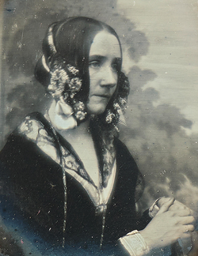
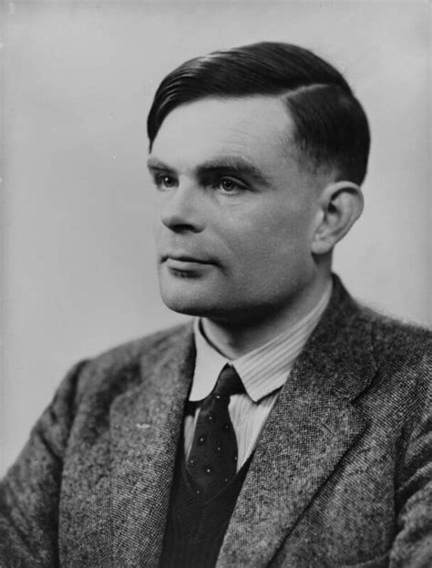

Augusta Ada Byron King, Condessa de Lovelace (nascida Byron, 10 de dezembro de 1815 — 27 de novembro de 1852), atualmente conhecida como Ada Lovelace, foi uma matemática e escritora inglesa. Hoje é reconhecida principalmente por ter escrito o primeiro algoritmo para ser processado por uma máquina, a máquina analítica de Charles Babbage. Durante o período em que esteve envolvida com o projeto de Babbage, ela desenvolveu os algoritmos que permitiriam à máquina computar os valores de funções matemáticas, além de publicar uma coleção de notas sobre a máquina analítica. Por esse trabalho é considerada a primeira programadora de toda a história.
Em 1843, Ada traduziu um artigo do matemático italiano Luigi Menabrea sobre a máquina analítica de Babbage, acrescentando suas próprias notas. Essas notas continham um algoritmo para calcular os números de Bernoulli usando a máquina analítica, o que é considerado o primeiro programa de computador da história. Por isso ela é considerada a primeira programadora da história.

Alan Mathison Turing (23 de junho de 1912 — 7 de junho de 1954) foi um matemático, lógico e cientista da computação britânico. Hoje é reconhecido como um dos principais pioneiros da computação moderna e da inteligência artificial. Durante a Segunda Guerra Mundial, trabalhou no centro de inteligência britânico em Bletchley Park, onde teve papel fundamental na quebra dos códigos da máquina Enigma utilizados pela Alemanha nazista. Seu trabalho ajudou significativamente os Aliados a vencerem a guerra e salvou milhões de vidas. Além disso, Turing desenvolveu o conceito da Máquina de Turing, um modelo teórico que se tornou base para o funcionamento dos computadores modernos.
Em 1950, Turing publicou o artigo “Computing Machinery and Intelligence”, no qual propôs uma pergunta que se tornaria famosa: “As máquinas podem pensar?”. Nesse trabalho ele apresentou o chamado Teste de Turing, um método para avaliar se uma máquina pode demonstrar comportamento inteligente semelhante ao humano. Essa ideia se tornou um dos fundamentos do desenvolvimento da inteligência artificial e continua sendo discutida e estudada até hoje.

Charles Babbage (26 de dezembro de 1791 — 18 de outubro de 1871) foi um matemático, filósofo, inventor e engenheiro mecânico inglês. Hoje é reconhecido principalmente como o “pai do computador”, por ter projetado a primeira máquina de computação automática programável. Ele idealizou a Máquina Analítica, um dispositivo mecânico que possuía conceitos muito semelhantes aos dos computadores modernos, como memória, unidade de processamento e entrada de dados. Embora a máquina nunca tenha sido completamente construída em sua época, suas ideias serviram de base para o desenvolvimento dos computadores no século XX.
Antes da Máquina Analítica, Babbage também desenvolveu o projeto da Máquina Diferencial, criada para calcular automaticamente tabelas matemáticas com maior precisão. Esse projeto tinha o objetivo de reduzir erros humanos em cálculos usados na navegação, engenharia e ciência. Mesmo não tendo conseguido concluir suas máquinas em vida, os projetos detalhados de Babbage mostraram que seus conceitos estavam muito à frente de seu tempo e inspiraram o desenvolvimento da computação moderna.